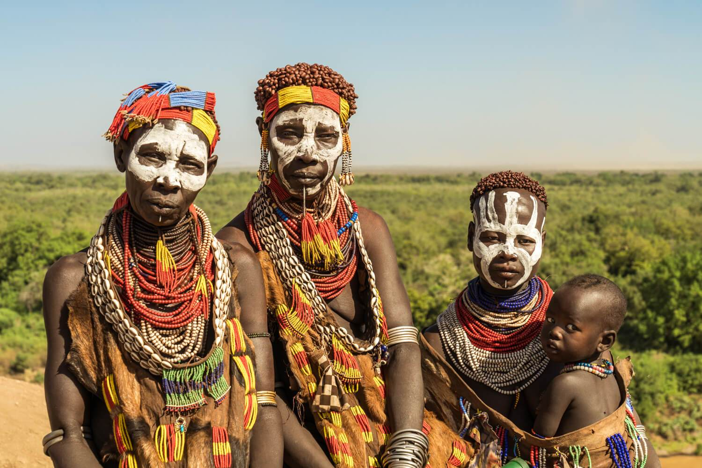

The following points helps you to understand Ethiopia more and motivates you to discover this mysterious land.
About Ethiopia
The Population
The Land and Topography
Time and Climate
Language and Ethnicity
About Ethiopia
The Federal Democratic Republic of Ethiopia is located in the north-eastern part of Africa commonly known as the
Horn of
Africa. It is strategically proximate to the Middle East and Europe, together with its easy access to the major
ports of
the region, enhances its international trade.
It is bordered by the Sudan in the west, Somalia and
Djibouti in the east,
Eritrea in the north and Kenya in the south. The country covers 1,112,000 square kilometres (472,000 sq. miles)
making
it roughly as large as France and Spain combined and is five times the size of the UK.
From the north and running down the center are the Abyssinian highlands.
To the west of the chain the
land drops to the
grasslands of Sudan, to the east to the deserts of the Afar. South of Addis Ababa, the land is dominated by the
Rift
Valley Lakes.
Ethiopia's central plateau varies in height between 2,000 and 3,000 meters. In the north and center of the
country there
are some 25 mountains whose peaks rise over 4,000 meters (13,200ft), the highest being Ras Dashen at 4,543
meters
(14,538ft).
audio snippet
Watch small video snippet Ethiopia in celebration
Language and Ethnicity

Ethiopia is a land of
enormous diversity and as a result Ethiopia has more than 80 languages and over 200 dialects.
Amharic or Amharigna is the official language of Ethiopia although the government encourages local languages
to be
taught in schools. The working languages of the national/regional governments may differ according to
regions. Other
main languages include Oromigna and Tigrigna are also widely spoken. The variety of the language tells us
that the country is ethnically diverse nations. more than 80 differnt ethnic groups are present in Ethiopia.
The Oromos constitiute the largest population with 34.4% followed by the Amharas with 27%, Somalis with
6.2%, Tigrayans 6.1%, Sidamas, Gurage, Welayta, Hadiya, Afar, Gamo and Others.
The Population
With a population of about 110.14 million, Ethiopia represents a melting pot of ancient cultures with Middle
Eastern and
African cultures evident in the religious, ethnic and language composition of its Semitic, Cushitic, Omotic
and Nilotic
peoples. The Ethiopian peoples comprise about eighty nationalities of which the Amhara and the Oromo
constitute the
majority, with about 60 percent of the total population. Approximately 85 percent of the population live in
the rural
areas.
The annual population growth rate is about 3.09 percent, and the economically active segment, between ages
14 and
60, is about 50 percent of the total population. Ethiopia is a Federal Democratic Republic composed of 9
National
Regional States (NRS) – Tigray, Afar, Amhara, Oromia, Somali, Benishangul-Gumuz, Southern Nations,
Nationalities and
Peoples Region (SNNPR), Gambella and Harari – and two administrative councils – Addis Ababa and Dire Dawa.
The NRS and
the Administrative councils are further divided into 62 zones and 523 woredas.
No
Year
Population
1
2015
100.8 Million
2
2016
103.6 Million
3
2017
106.4 Million
4
2018
109.2 Million
5
2019
112.1 Million
6
2020
115 Million
7
2021
117.9 Million
8
2022
122 Million
Time and Climate
Ethiopia is in the +3 hrs GMT time zone. It is worth bearing in mind, however, that in addition to this Ethiopia
also
has its own time. This is based on the conception that the Ethiopian day is constituted of roughly 12 hours of
daylight,
starting at 6.00am and roughly 12 hours of darkness, starting at 6.00pm. So, 7.00am is 1.00am Ethiopian time.
Urban Ethiopians often use both systems as appropriate. Nevertheless, in general, when asking about dates and
times, it
is always worth checking which system is being used!
Also about its climate in Ethiopia there are two seasons.
in most of the country the dry season prevails from October until May with short rains in March; the wet season
runs
from June until the end of September. In the Omo and Mago parks however, in Southern Ethiopia, the seasons are
different
with the main rains from March to June, and shorter rains in November.
Although Ethiopia lies within 15 degrees north of the equator, owing to the moderating influence of high
altitude, the
central highlands, where most Ethiopian people live, generally enjoy a temperate and pleasant climate. In the
highlands
above 2,000 meters the temperature rarely exceeds 25°C in most of the country. In the lower lying areas (Awash,
Omo and
Mago parks), which experience sub-tropical and tropical climates, it can get considerably hotter. The
temperature
generally drops quite rapidly towards sunset.
Land and Topography
Location: Ethiopia is strategically located in the Horn of Africa, 3′ and 14.8″
latitude 33′ and 48′ longitude bordering Somalia, the Sudan, Djibouti, Kenya and Eritrea with a total border length
of 5,311 km. Its proximity to the Middle East and Europe, together with its easy access to the major ports of the
region, enhances its international trade.The most famous Ethiopian river is the Blue Nile or Abbay, which flows a
distance of 1,450 kilometers from its
source to join the White Nile at Khartoum. From the north and running down the centre are the Abyssinian highlands.
To the west of the chain the land drops to the grasslands of Sudan, to the east to the deserts of the Afar. South of
Addis Ababa, the land is dominated by the Rift Valley Lakes.
It is the 10th largest country in Africa.
The 2nd-most populous country in Africa after Nigeria